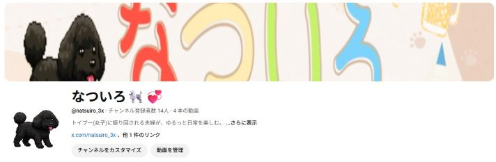

自己紹介
山藤 奈都紀と申します。
現在、Web制作と動画編集の分野に興味を持ち、日々学習を進めている初学者です。
最近は、PHPとMySQLを用いて家計簿アプリを開発いたしました。
エラーや仕様の理解に苦戦しながらも、調べて試行錯誤を繰り返すことで、ひとつのアプリとして形にすることができました。
自分の手で「動くものを作れた」という経験は、大きな達成感と自信につながっています。
また、動画編集に関しては前職での業務経験を活かし、構成から字幕付けまでをすべて自身で行ったオリジナル作品を制作しました。
表現力や伝える力の向上を意識しながら、視聴者に楽しんでいただける内容づくりを心がけています。
まだ未熟な点も多いですが、「やってみたい」を形にできる力を身につけられるよう、今後も継続して学習を重ねてまいります。
制作物①：家計簿アプリ

PHP・MySQL・HTML・CSSを用いて、初めて開発したWebアプリケーションです。
「支出を入力 → 一覧で確認 → 合計を自動計算する」という、シンプルな収支管理機能を実装しています。
学習初期段階での開発だったため、仕様の理解やエラーの対応に苦労しましたが、
試行錯誤を重ねる中で、Webアプリケーションの基本的な仕組みを実践的に学ぶことができました。
今後は、さらなる機能の追加やデザイン面の改善にも取り組み、より使いやすいアプリを目指していきたいと考えています。
制作物②：YouTube用動画

動画編集スキルの習得を目的として、YouTube向けに複数の動画を制作いたしました。
編集には主に無料ツール（Microsoft Clipchamp）を使用し、カット編集・字幕の挿入・BGMの選定・テンポの調整など、視聴者にとって見やすく伝わりやすい構成を意識しています。
内容としては、ゲーム実況やショート動画を中心に制作しており、サムネイル作成なども含めて一人で完結させています。
現在も試行錯誤を重ねながら、より魅力的な映像表現を目指して取り組んでいます。